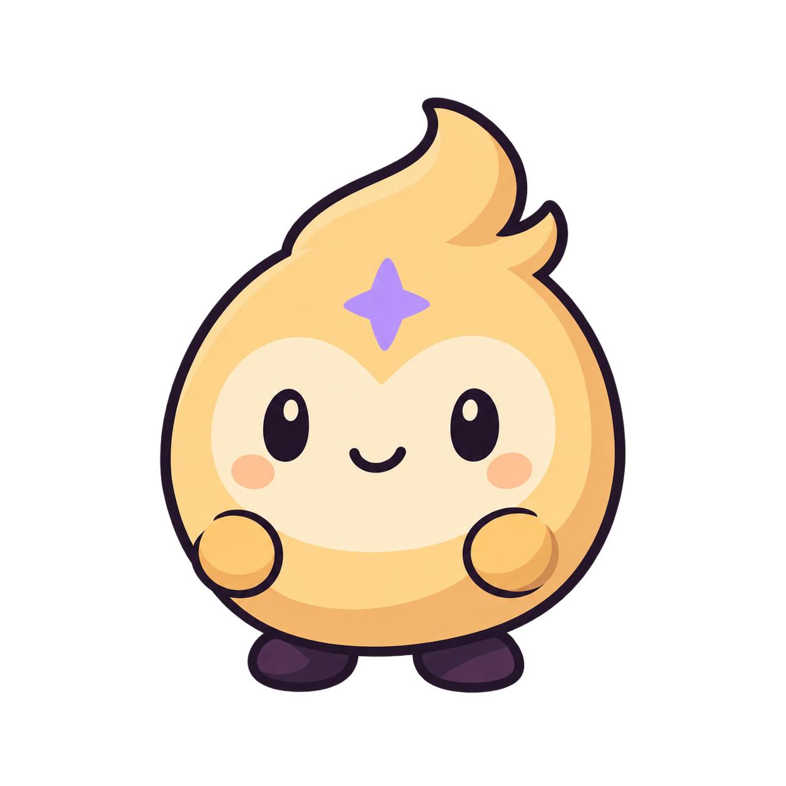
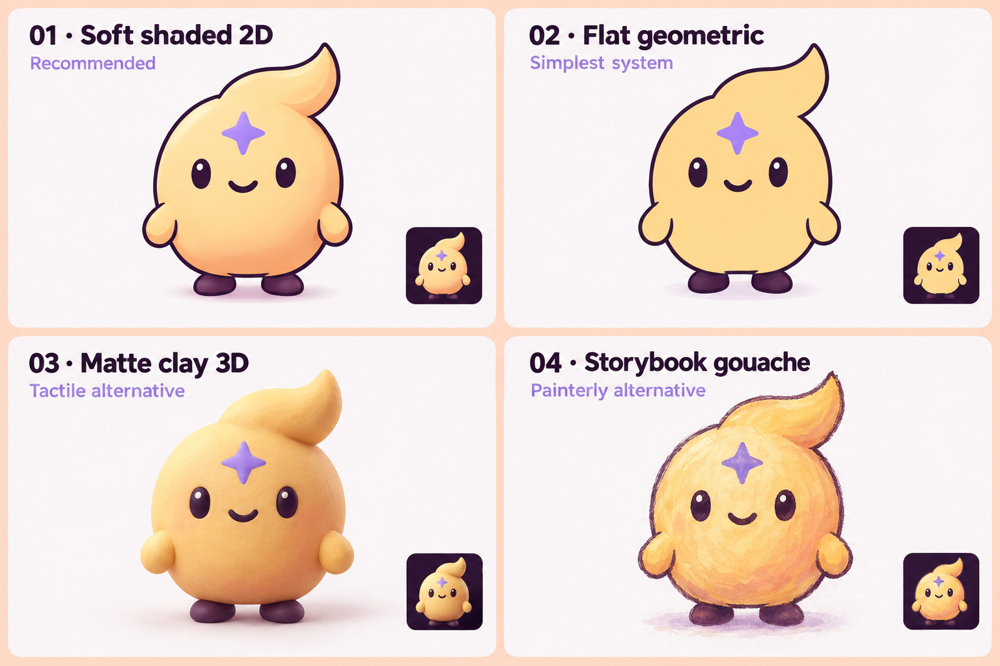
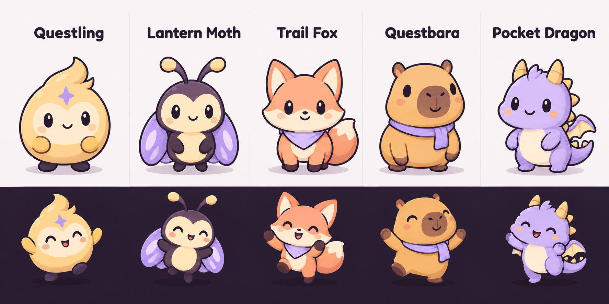
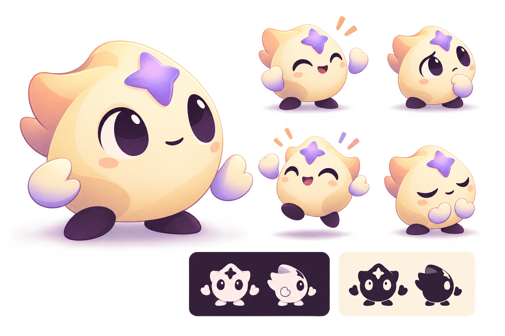
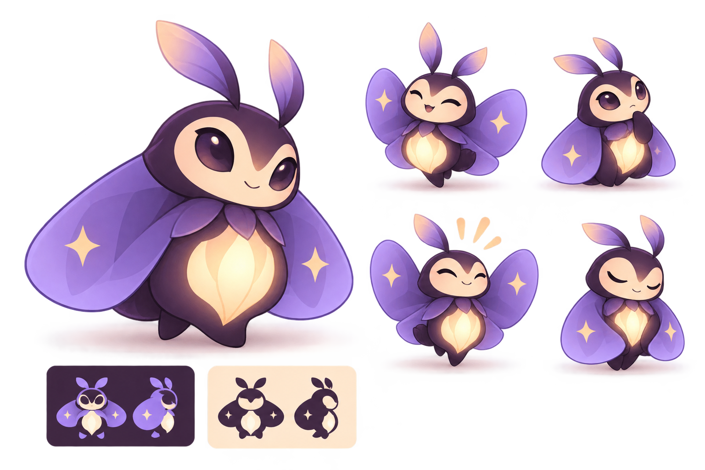
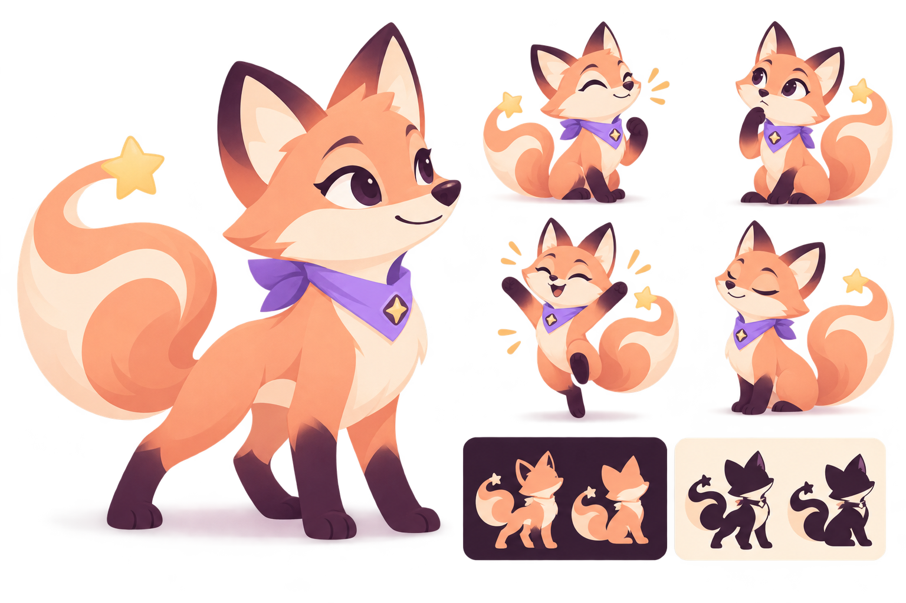
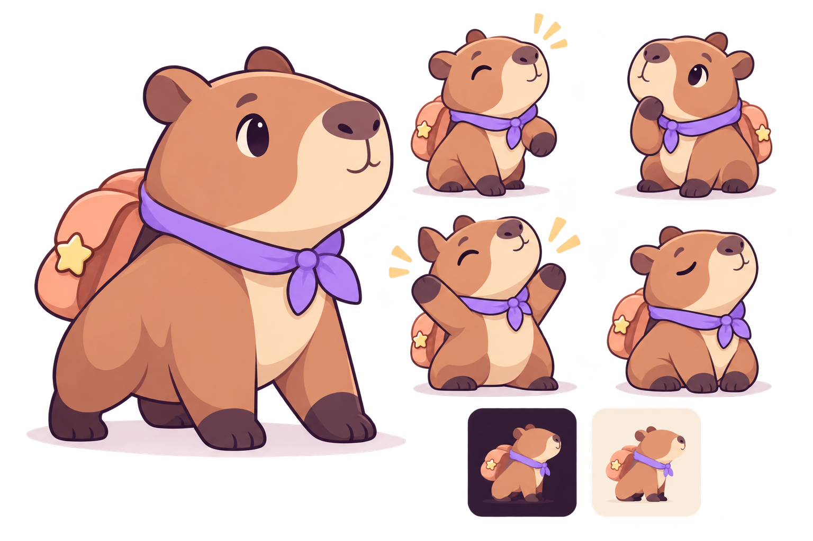
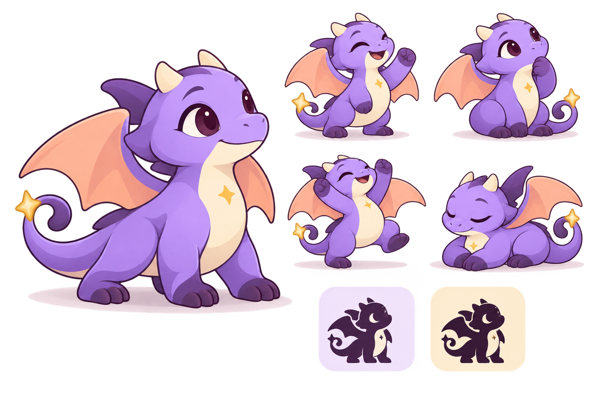
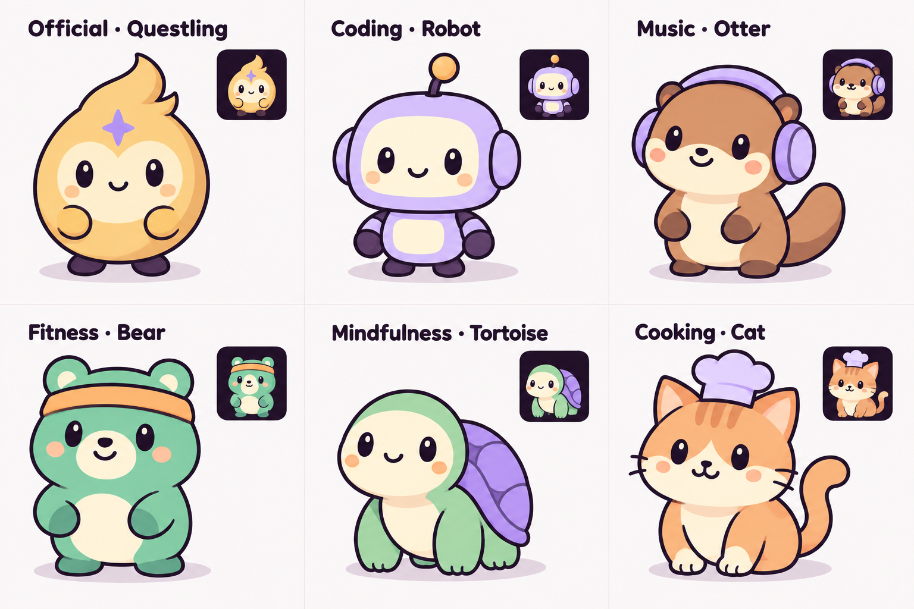

Anything can become a quest
Habits, skills and side projects become roadmaps with steps, exercises and earned XP. Categories span coding, fitness, music, mindfulness and more.
My proposed direction is Questling in soft shaded 2D, with Lantern Moth as the strongest alternative. Five characters and four rendering styles make the decision concrete. A shared drawing grammar gives future course characters room to be different while belonging to the same app.

Decision status: exploration, ready for your assessment. The ranking is my design judgment, not measured user preference. The generated boards show possibilities; they are not production identity sheets. The application source and existing artwork remain unchanged.
The active product is GamifyApp. Its palette, geometry, voice and responsive mascot slot set the design constraints.
Habits, skills and side projects become roadmaps with steps, exercises and earned XP. Categories span coding, fitness, music, mindfulness and more.
Home says “Fresh start. One step is plenty.” Streak recovery says “You missed yesterday. It happens.” My inferred mascot role is a reassuring peer and curious companion.
One explicit mascot placeholder appears in Home. Its nominal 96/120 px slot shrinks to screen width minus 270: 50 px at a 320 px width. Other illustration placements are future proposals.
Primary observation · active palette, Jakarta type and rounded UI: gamify-ui.tsx, line 23. The generic starter theme is not the basis for this exploration.
Inference: soft shaded 2D connects the rounded interface with an expressive creature. Flat geometric is the cleanest alternative. Compare at equal size to confirm or challenge that judgment.

Crisp filled shapes, round plum contours, broad restrained shading. A face and silhouette that can carry emotion in a compact UI.
Few flat color regions and clear shape rules. Choose it if the small-size comparison is equally expressive and more legible.
Explore for larger hero and campaign imagery. Volume and texture need a separate small-size check before becoming the cast style.
Explore for narrative illustrations and course covers. Brush variation would need tighter review to keep generated characters together.
The new board compares all five in one drawing language, including cheerful poses. The detailed cards preserve earlier workspace concepts for a broader view.

A small companion for any goal

Existing concept · preserved from the workspace
A warm gold spark or seed creature with a swept crest and a lavender badge. Its compact face-first shape fits the daily coach role.
Compact, course-neutral, easy to connect with the quest identity.
What to testThe crest still reads as a flame. Decide whether that connection to streaks is welcome before locking the silhouette.
A gentle guide with a distinct silhouette

Existing concept · preserved from the workspace
Cream face and gold core, plum body, lavender wings. The new shortlist folds its wings to give the face more room.
Distinctive, gentle personality; a close match to the plum and lavender palette.
What to testWings and antennae compete with the face at small sizes. Test the folded-wing version on the actual warm card.
Curious, playful, ready for the next step

Existing concept · preserved from the workspace
A round peach fox with cream muzzle, short ears, and a curled tail. The most active everyday-animal direction.
Clear expressions and inviting peach colors.
What to testKeep ears and tail inside the square. Its recognition should survive without the neckerchief.
Steady support for building habits

Existing concept · preserved from the workspace
A relaxed capybara with a rounded muzzle and a small lavender scarf. A quieter presence beside daily encouragement.
Gentle, reassuring posture and simple main body mass.
What to testShow curiosity and celebration without losing its calm character. It needs a stronger identity than an accessory alone.
A little more fantasy in the quest

Existing concept · preserved from the workspace
Lavender body, cream belly, abbreviated horns, wings and tail. The most overtly adventurous proposal.
Clear quest framing and a broad gesture vocabulary.
What to testMost appendages to simplify. Choose this if a fantasy tone is desirable for everyday goals.
| Candidate | Personality proposal | Decision to resolve |
|---|---|---|
| 01 · Questling | A small companion for any goal | The crest still reads as a flame. Decide whether that connection to streaks is welcome before locking the silhouette. |
| 02 · Lantern Moth | A gentle guide with a distinct silhouette | Wings and antennae compete with the face at small sizes. Test the folded-wing version on the actual warm card. |
| 03 · Trail Fox | Curious, playful, ready for the next step | Keep ears and tail inside the square. Its recognition should survive without the neckerchief. |
| 04 · Questbara | Steady support for building habits | Show curiosity and celebration without losing its calm character. It needs a stronger identity than an accessory alone. |
| 05 · Pocket Dragon | A little more fantasy in the quest | Most appendages to simplify. Choose this if a fantasy tone is desirable for everyday goals. |
My first choice: Questling. Its central face and compact body suit the narrow Home slot, while its abstract identity can serve unrelated goals. That inference would be weakened if the crest feels too much like the streak flame, or if a folded-wing Moth communicates warmth and recognition more clearly at 50 px. Test idle, celebration and reassurance before making the official choice.
The official mascot carries the daily relationship. Course characters can have their own species and topic props. Their rendering, facial construction and visual weight stay consistent.

Rounded plum contours at about 1.5–2% of silhouette width; flat major color regions; one or two broad shadow shapes; modest dark oval eyes; small mouth; short rounded limbs. No material texture or body shine.
Approve a neutral master for each character, then derive expressions from it. Hold proportions, markings, limb count, face landmarks and outline treatment. A text prompt alone does not establish consistency.
Different silhouettes and one simple topic prop give each course a personality. Use the existing category accents. Keep every appendage within the square and reserve Questling’s identity combination.
Proposed rules · category accents are a primary observation from LOOKS mapping, line 98. Future character generation is not currently represented by RoadmapDraft, line 61.
Proposed set: friendly idle; attentive focus; thinking/working; modest step celebration; milestone celebration; gentle reassurance after a missed day or retry. The exploration visualizes idle and cheer; the rest require later identity-preserving review.
Primary observation · triggers: Home, line 540, exercises, line 945, AI generation, line 1183, completion, line 1008, streak recovery, line 1550.
The first family generation gave the cooking cat a fox-like tail and added glossy body highlights. The refined board corrects those issues. Compare results against the written rules each time: generated examples are review evidence, not a guarantee of future consistency.
The standalone neutral PNG has alpha transparency. Select an image-box size and switch the page theme. The image’s original transparent padding is included; screenshots and browser zoom can change perceived physical size.
320 px study width · 50 px mascot image box
390 px study width · 120 px box (96 px on narrow browsers)
Layout studies use the repository’s colors, 14 px card gap and responsive image sizing. They are not screenshots of the live app. Primary observation · sizing, line 488; today card, line 537; card style, line 1708.
Reviewer observation: the face and badge remain discernible in the 50 px image box, but the dark feet lose contrast on plum. The crest still reads as a flame. If Questling is selected, compare a lighter foot edge and a rounder crest before locking the identity. This is visual judgment, not a user recognition test. Only Questling currently has a standalone exact-size preview.
These are proposed rules to approve with the mascot. Keep identity and style references attached for every new course character and expression.
Approve the candidate and rendering style; settle the silhouette and face proportions in one neutral master; derive idle, cheer, focus and reassurance from that reference; inspect each at 50/96/120 px in both Home themes; then prepare individual assets and integrate them. This exploration leaves the choice open and does not change the application.